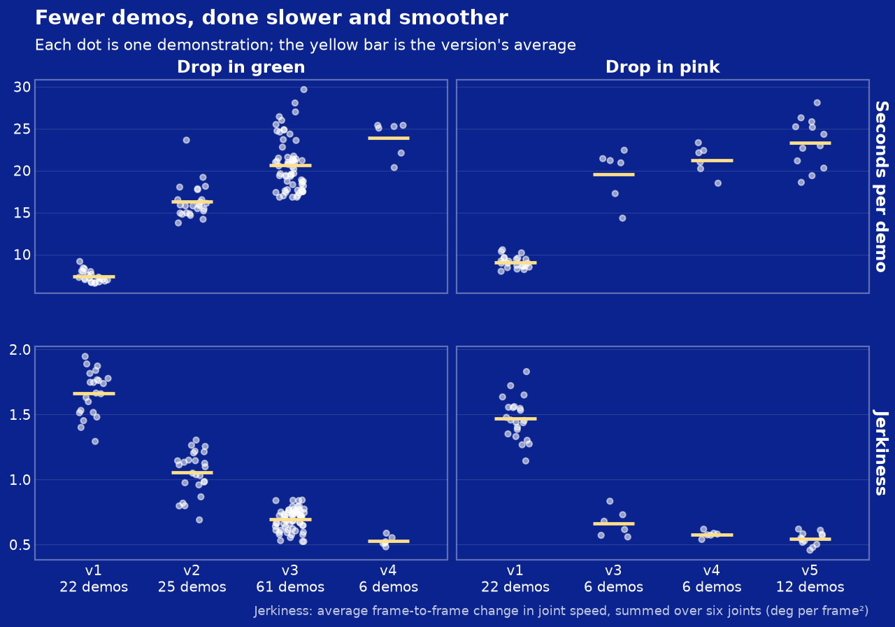

Imitation Learning
Trained on human movement, selected for training speeds and robustness.
To check: 145 + 46 + 10 = 201. The other 29 are "Grip Master", pick-up-and-put-back practice. Fold them into a type, show them as a fourth tile, or keep them in the 230 only?
Longer demos, smaller datasets
Our first demonstrations were fast and twitchy. With each new version we moved the arm more slowly and smoothly, and recorded fewer demos. The arm covered the same ground each time, but over three times as long, and with two thirds less jerk. Smoother movement meant less noise for the model to copy, so it moved more accurately while learning from less data.

To check: the data shows slower, smoother demos. "Moved more accurately" is our eye test, not a measurement. Keep it as is, or say "looked more accurate to us"?
Three skills, trained in isolation
Rather than one model that does everything, each skill is its own policy, trained only on its own demonstrations. Anomalib decides which one runs.
Videos are demonstrations we taught the policies with. Placeholder clips: swap for your picks.
ACT
Action Chunking Transformer: a small model that watches the cameras and joint angles and predicts the next chunk of movement (about 3 seconds) in one go.
- Learns from tens of demos
- Trains in minutes
- Smooth motion, because it plans in chunks
VLA
Vision-Language-Action model: a large model pretrained on images and text, fine-tuned to turn a camera view and a written instruction into movement.
- One model for many tasks
- Takes instructions in plain language
- Brings general knowledge from pretraining
Our choice: ACT
With 6 to 61 demos per dataset, we needed a model that learns quickly from very little. ACT was built for exactly that: its authors taught real tasks from only 10 minutes of demonstrations. It let us record, train and try again within the hackathon.